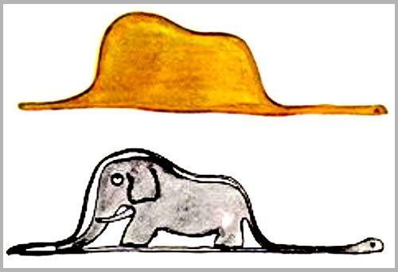
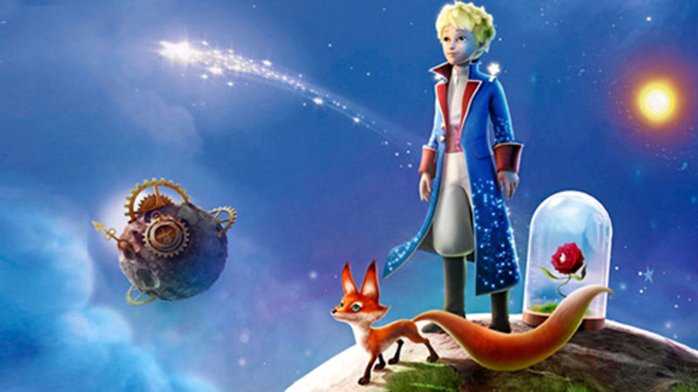

Portada
Al Alba
Y me encuentro aquí tan sola, ya veo el alba venir, son las notas de la aurora que ha de despedirse de mí. Y cuando la intensidad de sueño penetren estos huesos de sol, sabre que no hubo mas consuelo que un fugaz destello de amor.
Amar a una Flor
Si alguien ama a una flor de la que sólo existe un ejemplar entre millones y millones de estrellas, es suficiente mirar al cielo para ser feliz pues puede decir satisfecho: "Mi flor está allí, en alguna parte…" ¡Pero si el cordero se la come, será tan doloroso como si de pronto todas las estrellas se apagaran! ¿Y… esto tampoco es importante?
No supe amarla
¡No supe comprender nada entonces! Debí juzgarla por sus actos y no por sus palabras. ¡Ella perfumaba e iluminaba mi vida! ¡No debí haber huido! ¡No supe reconocer la ternura detrás sus pobres astucias! ¡Son tan contradictorias las flores! Y… yo era demasiado joven para saber amarla
Sí, yo te quiero
Sí, yo te quiero –le dijo la flor–. Si no te has dado cuenta la culpa ha sido mía, pero eso ahora no tiene importancia. Y tú has sido tan tonto como yo. Procura ser feliz… Y deja el biombo. No lo necesito.
Domesticar
¡Sí!, verás –dijo el zorro–. Tú eres para mí, sólo un muchachito igual a otros y no te necesito para nada. Tampoco tú tienes necesidad de mí y no soy para ti más que un zorro como otro zorro cualquiera. Pero si tú me domesticas, entonces tendremos necesidad el uno del otro. Tú serás para mí único en el mundo, como también yo lo seré para ti...
Mi Amigo Zorro
Y continúo: –Mi vida es muy monótona. Cazo gallinas y los hombres me cazan a mí. Todas las gallinas son muy parecidas y todos los hombres se parecen entre sí; Así que, como ves, me aburro constantemente. En cambio, si tú me domesticas, mi vida se llenará de sol y conoceré el rumor de unos pasos diferentes a los de otros hombres. Estos me hacen esconder bajo la tierra; los tuyos me llamarán fuera de la madriguera como una música. Además, ¡mira! ¿Ves allá abajo los campos de trigo? Yo no como pan y por lo tanto el trigo no me significa algo, es inútil para mí. Los trigales no me recuerdan nada y eso me pone triste. ¡Sin embargo, tú tienes el cabello dorado como el trigo y, cuando me hayas domesticado, será maravilloso ver los trigales: te recordaré y amaré el canto del viento sobre el trigo.
Mi rosa es unica
Son realmente muy bellas pero están vacías. Nadie daría la vida por ustedes. Cualquiera puede creer que mí rosa es igual. ¡No es así! Ella es más importante que todas ustedes juntas porque a ella he regado, a ella cuidé y protegí con el biombo, porque la libré de los gusanos, dejando sólo los que serían mariposas. Porque es ella a la que oí quejarse, vanagloriarse y, a veces, hasta callarse. Porque, finalmente, ella es mi rosa.
Holograma
Sólo con el corazón se puede ver bien; lo esencial es invisible a los ojos.
Fin
Gracias Totales :D